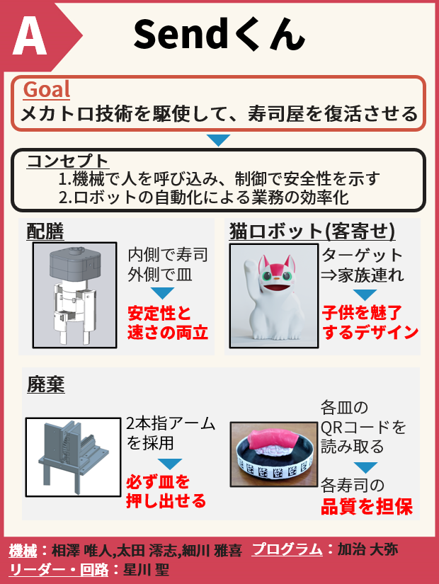
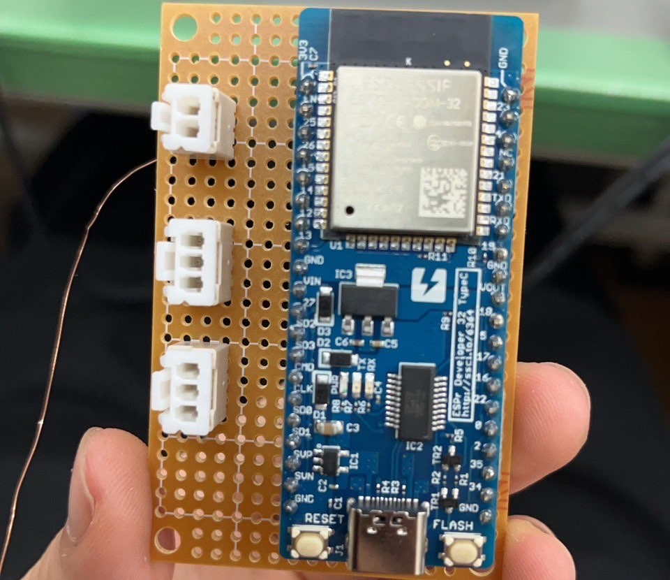

チームでの製作手順を実際に行うことで学ぶことを目的とした授業が在学4年時にありました。 与えられたテーマは「SNSにより寿司が古いと風評被害を受けたすし屋をメカトロニクス技術を用いて解決しよう!」です。
「寿司の品質を担保」「いなくなってしまった客を呼び寄せる」の2点に焦点を当てることを最初に企画しました。 文化祭でポスター発表をするため、ポスター制作を行いました。

ハードウェア、ソフトウェア担当からもらった仕様に合わせて、マイコンのシールドを作成しました。

topに戻る